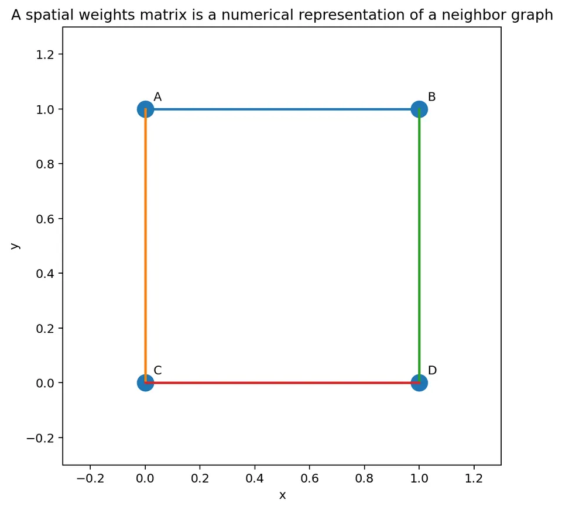
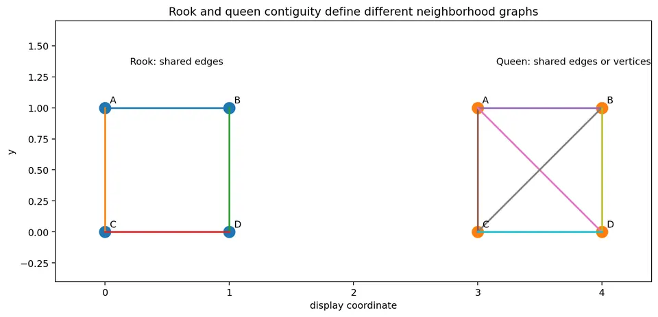
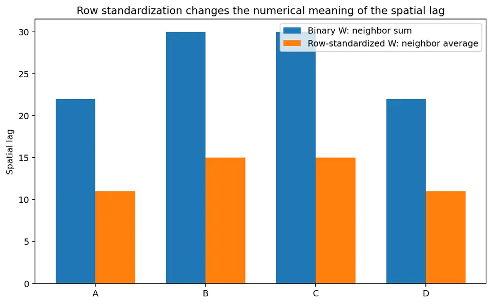
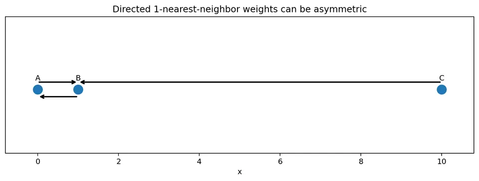
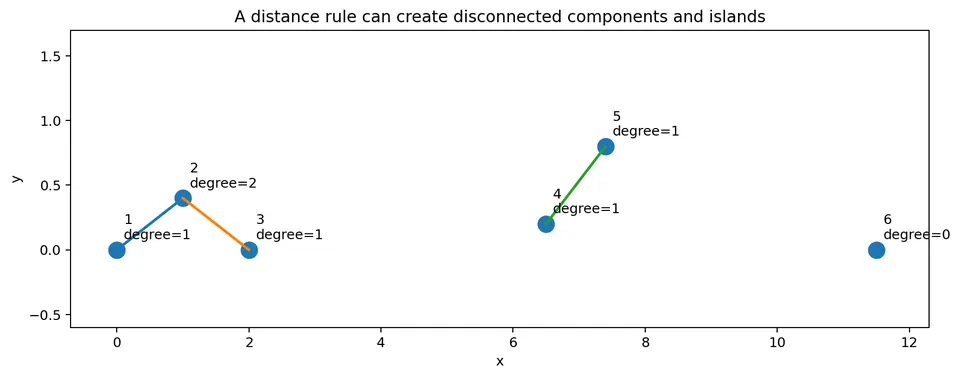
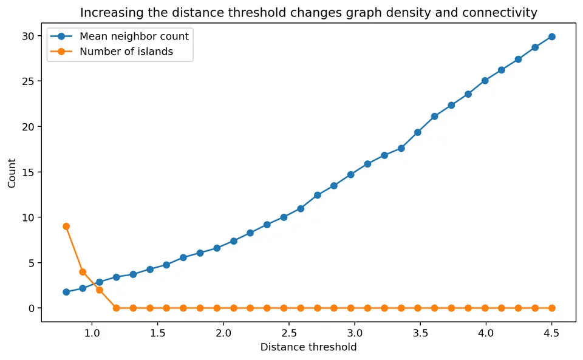
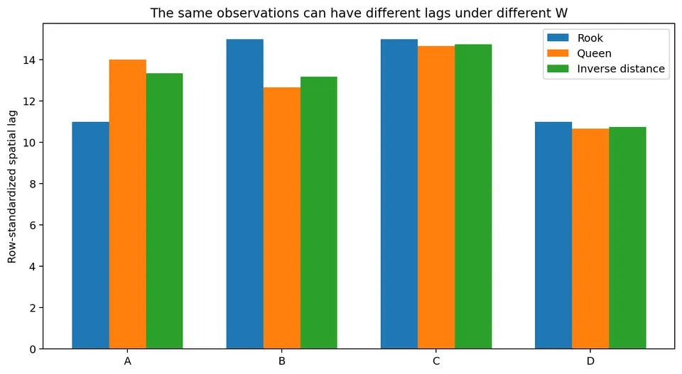

Spatial Weights and Spatial Lags
A spatial weights matrix turns a qualitative statement such as
“these locations are neighbors”
into a numerical object that can be used in spatial statistics and spatial regression. For $n$ observations, define
$$ W=[w_{ij}], $$
where $w_{ij}$ describes the connection from location $i$ to location $j$. Usually,
$$ w_{ii}=0, $$
so a location is not treated as its own neighbor. A weights matrix defines which other observations enter a location's neighborhood summary and with what strength. The ordering of its rows and columns must match the ordering of the data vector. A correctly constructed geographic graph paired with a differently sorted data table produces the wrong spatial lag without necessarily producing a numerical error. Retaining stable region identifiers and checking their alignment is therefore part of the model definition. Changing $W$ can change:
- spatial lags;
- Moran's $I$;
- local cluster classifications;
- spatial regression coefficients;
- admissible SAR parameter values;
- the scientific interpretation of “neighbor.”
A Matrix Entry Defines a Specific Operation
For the convention used here, row $i$ identifies the location whose neighborhood is being summarized, while column $j$ identifies the location contributing a value. Thus $w_{ij}$ is the weight applied to $x_j$ when calculating the lag at $i$. Some applications describe directed influence in the opposite verbal direction, so an equation such as $(Wx)_i=\sum_jw_{ij}x_j$ is less ambiguous than an arrow label alone.
The connection can represent shared borders, movement along a network, or physical proximity. Its strength can be binary or continuous. After choosing it, determine whether a row's total strength should be preserved or normalized away. A count of neighboring cases and an average neighboring rate answer different questions, even when built from the same adjacency graph.
The matrix also defines a relationship between identifiers. If its order is A, B, C but the data vector is accidentally B, A, C, multiplication still returns three numbers. Those numbers summarize the wrong locations. Reordering the observations consistently can be expressed by a permutation matrix $P$: use $x_{\mathrm{new}}=Px$ together with $W_{\mathrm{new}}=PWP^\top$. Then
$$ W_{\mathrm{new}}x_{\mathrm{new}}=P(Wx), $$
so the lag is merely reordered. Reordering only one of them changes the calculation. Stable region identifiers and an explicit alignment check are therefore part of a spatial analysis, including analyses in which the neighborhood graph itself is supplied by another source.
What does a spatial weights matrix represent?
Suppose there are four spatial units: $A,\ B,\ C,\ D$. A binary weights matrix might be
$$ W= \begin{bmatrix} 0&1&1&0\\ 1&0&1&0\\ 1&1&0&1\\ 0&0&1&0 \end{bmatrix}. $$
Read the first row as:
- A is not its own neighbor;
- A is connected to B;
- A is connected to C;
- A is not connected to D.
So
$$ w_{AB}=1, \qquad w_{AC}=1. $$
The matrix is the numerical representation of the neighborhood graph.

The diagonal is usually zero
The diagonal entry $w_{ii}$ describes the relationship from a location to itself. For many spatial statistics, the diagonal is set to zero:
$$ w_{ii}=0. $$
Why? Because the goal is usually to summarize information from other locations. For example, a spatial lag should describe the neighborhood around location $i$, not reproduce $x_i$ itself. There are specialized settings in which self-weights are meaningful, but a zero diagonal is the standard default for the methods in this chapter.
Contiguity weights
For polygon data, neighborhood is often defined by shared boundaries. Let $A_i$ and $A_j$ be two polygons. A binary contiguity weight is
$$ w_{ij} = \begin{cases} 1,& A_i\text{ and }A_j\text{ are neighbors},\\ 0,& \text{otherwise}. \end{cases} $$
Two common definitions are rook and queen contiguity.
Rook contiguity
Rook contiguity requires two polygons to share an edge of positive length. Imagine four square cells:
$$ \begin{matrix} A & B\\ C & D \end{matrix} $$
Under rook contiguity:
- A neighbors B;
- A neighbors C;
- A does not neighbor D;
- B neighbors D;
- C neighbors D.
The diagonal contact between A and D does not count. The binary rook matrix is
$$ W_R= \begin{bmatrix} 0&1&1&0\\ 1&0&0&1\\ 1&0&0&1\\ 0&1&1&0 \end{bmatrix}. $$
Queen contiguity
Queen contiguity counts either:
- a shared edge;
- a shared vertex.
For the same $2\times2$ grid, every cell touches all three other cells either by an edge or a corner. Therefore
$$ W_Q= \begin{bmatrix} 0&1&1&1\\ 1&0&1&1\\ 1&1&0&1\\ 1&1&1&0 \end{bmatrix}. $$

Why does this matter?
Rook and queen contiguity define different neighborhoods. If a spatial statistic changes substantially between them, the result is sensitive to whether corner-touching regions are treated as connected.
Worked rook spatial lag
Use the rook matrix
$$ W_R= \begin{bmatrix} 0&1&1&0\\ 1&0&0&1\\ 1&0&0&1\\ 0&1&1&0 \end{bmatrix} $$
and observed values
$$ x= \begin{bmatrix} 10\\ 14\\ 8\\ 20 \end{bmatrix}. $$
The unstandardized spatial lag is $W_Rx$. For A,
$$ (W_Rx)_A = 1(14)+1(8) = 22. $$
For B,
$$ (W_Rx)_B = 1(10)+1(20) = 30. $$
For C,
$$ (W_Rx)_C = 1(10)+1(20) = 30. $$
For D,
$$ (W_Rx)_D = 1(14)+1(8) = 22. $$
Thus
$$ \boxed{ W_Rx = \begin{bmatrix} 22\\ 30\\ 30\\ 22 \end{bmatrix} }. $$
These are neighbor sums, not neighbor averages.
Row standardization
A common transformation divides each nonzero row by its row sum. If
$$ s_i=\sum_jw_{ij}, $$
then
$$ \boxed{ w_{ij}^{(R)} = \frac{w_{ij}}{s_i} }. $$
For a non-isolated location,
$$ \sum_jw_{ij}^{(R)}=1. $$
This changes the numerical meaning of $W$. For nonnegative weights and a positive row sum, row standardization creates a convex weighted average: the lag lies between the smallest and largest neighboring values. Multiplying every raw weight in a row by the same positive constant leaves this average unchanged. Relative weights within the row still matter. By contrast, raw lags preserve differences in total connection strength, so the two versions answer different questions about neighborhood influence. It is a modeling choice, not merely a computational trick.
Worked row-standardization example
In the rook matrix above, every cell has two neighbors. The first row is $[0,1,1,0]$. Its row sum is $2$. After row standardization,
$$ [0,1,1,0] \longrightarrow \left[ 0,\frac12,\frac12,0 \right]. $$
Therefore
$$ W_R^{(R)} = \begin{bmatrix} 0&1/2&1/2&0\\ 1/2&0&0&1/2\\ 1/2&0&0&1/2\\ 0&1/2&1/2&0 \end{bmatrix}. $$
Row-standardized spatial lag
Now compute $W_R^{(R)}x$. For A,
$$ (W_R^{(R)}x)_A = \frac12(14) + \frac12(8). $$
So
$$ (W_R^{(R)}x)_A = 7+4 = 11. $$
Thus, A's spatial lag is the mean of its two neighbors:
$$ \boxed{ 11 }. $$
Similarly,
$$ (W_R^{(R)}x)_B = \frac12(10)+\frac12(20) = 15. $$
The full spatial lag is
$$ \boxed{ W_R^{(R)}x = \begin{bmatrix} 11\\ 15\\ 15\\ 11 \end{bmatrix} }. $$
This is why row-standardized binary weights are often described as producing a neighbor average.
Binary versus row-standardized weights
For binary weights, $(Wx)_i$ grows partly with the number of neighbors. A region with eight neighbors can receive a much larger raw lag than a region with two neighbors even when their neighboring values have similar magnitudes. For row-standardized weights, $(W^{(R)}x)_i$ is instead a weighted average. These two forms encode different ideas. Neither is automatically appropriate in every application.

Row Standardization Changes Relative Contributions
Consider four locations on a line, linked only to immediate neighbors. The binary adjacency and its row-standardized version are
$$ A= \begin{bmatrix} 0&1&0&0\\ 1&0&1&0\\ 0&1&0&1\\ 0&0&1&0 \end{bmatrix}, \qquad W= \begin{bmatrix} 0&1&0&0\\ 1/2&0&1/2&0\\ 0&1/2&0&1/2\\ 0&0&1&0 \end{bmatrix}. $$
For $x=(1,2,4,8)^\top$, the raw lag is $Ax=(2,5,10,4)^\top$, while $Wx=(2,2.5,5,4)^\top$. Interior locations have twice as many neighbors as endpoints. Dividing interior rows by two changes their contributions relative to endpoint rows; it is not multiplication of the entire matrix by one common constant.
For this example, Moran's I is approximately $0.2522$ with $A$ and $0.2913$ with $W$, using each matrix's own $S_0$ normalization. A common positive rescaling $aA$ would cancel between Moran's numerator and $S_0$, producing the same statistic as $A$. Row standardization can change it because different rows receive different rescalings. An analysis should therefore report both the underlying neighbor rule and the weight transformation.
Raw inverse-distance weights also have units. Changing kilometers to meters multiplies all $d_{ij}^{-\alpha}$ weights by $1000^{-\alpha}$. Row-standardized relative weights are unchanged under that common conversion, but unstandardized lags are rescaled. A distance threshold must be converted as well; keeping its numerical value while changing units produces a different graph.
Distance-band weights
For point coordinates, define $d_{ij}$ as the distance between locations $i$ and $j$. A distance-band matrix can be defined as
$$ \boxed{w_{ij}=\mathbf{1}_{\{0<d_{ij}\le d_0\}}} $$
Locations are treated as neighbors when they lie within the threshold $d_0$.
Worked distance-band example
Suppose four locations lie on a line:
$$ A=0, \quad B=1, \quad C=3, \quad D=7 $$
in kilometers. Use threshold
$$ d_0=2.5\text{ km}. $$
Distances include:
$$ d_{AB}=1, $$
$$ d_{BC}=2, $$
$$ d_{CD}=4, $$
$$ d_{AC}=3. $$
Therefore:
- A-B are neighbors;
- B-C are neighbors;
- A-C are not;
- C-D are not.
The binary weights are
$$ W= \begin{bmatrix} 0&1&0&0\\ 1&0&1&0\\ 0&1&0&0\\ 0&0&0&0 \end{bmatrix}. $$
Location D has no neighbors. D is an island.
Threshold choice matters
If the threshold changes from $2.5$ to
$$ 4.5\text{ km}, $$
additional links appear:
- A-C becomes connected;
- C-D becomes connected.
The graph can change substantially after a modest change in the threshold. Therefore a threshold should be based on:
- process scale;
- measurement geometry;
- domain knowledge;
- sensitivity analysis.
It should not be chosen simply because it produces a desired statistical result.
$k$-nearest-neighbor weights
A $k$-nearest-neighbor rule connects each observation to its $k$ closest other observations. For example, with
$$ k=2, $$
every location sends connections to its two nearest neighbors. This is useful when sampling density varies across space. Unlike a fixed distance band, $k$-NN gives every location at least $k$ neighbors as long as there are at least $k+1$ observations, so it creates no islands. (It can still produce disconnected components.)
Directed $k$-NN weights can be asymmetric
Suppose three points lie at
$$ A=0, \qquad B=1, \qquad C=10. $$
With
$$ k=1, $$
A's nearest neighbor is B. B's nearest neighbor is A. C's nearest neighbor is B. Therefore:
$$ w_{CB}=1, $$
but
$$ w_{BC}=0. $$
So
$$ W\neq W^\top. $$

This asymmetry is not an error. It follows from the directed nearest-neighbor rule.
Symmetrizing $k$-NN weights
A directed $k$-NN graph can be symmetrized in different ways.
Union rule
Locations $i$ and $j$ are connected if either selects the other:
$$ w_{ij}^{(U)} = 1 \quad\text{if}\quad w_{ij}=1 \text{ or } w_{ji}=1. $$
Mutual rule
They are connected only if both select one another:
$$ w_{ij}^{(M)} = 1 \quad\text{if}\quad w_{ij}=w_{ji}=1. $$
These rules produce different graphs. Always state which convention is used.
Distance-decay weights
Instead of using a binary decision, distance can enter continuously. A common form is
$$ \boxed{ w_{ij} = d_{ij}^{-\alpha} } $$
for $i\neq j$. With
$$ \alpha=1, $$
the weight is inverse distance. With
$$ \alpha=2, $$
weights decay faster.
Worked inverse-distance example
Suppose location A has two neighbors at distances
$$ d_{AB}=1 $$
and
$$ d_{AC}=2. $$
With
$$ \alpha=1, $$
the raw weights are
$$ w_{AB}=1, $$
$$ w_{AC}=\frac12. $$
The row sum is
$$ 1+\frac12 = 1.5. $$
After row standardization,
$$ w_{AB}^{(R)} = \frac{1}{1.5} = \frac23, $$
and
$$ w_{AC}^{(R)} = \frac{0.5}{1.5} = \frac13. $$
If
$$ x_B=12, \qquad x_C=6, $$
then A's spatial lag is
$$ (Wx)_A = \frac23(12)+\frac13(6). $$
Therefore
$$ (Wx)_A = 8+2 = \boxed{ 10 }. $$
The closer neighbor therefore receives twice as much weight.
Coincident points need a safeguard
For inverse-distance weights,
$$ w_{ij}=d_{ij}^{-\alpha}, $$
a zero distance would cause division by zero. This can occur if:
- duplicate coordinates exist;
- several observations share a centroid;
- coordinates were rounded.
Possible responses include:
- investigate duplicate observations;
- aggregate coincident observations;
- use a small-distance floor;
- define special within-site relationships.
Do not allow infinite weights without explicitly addressing the cause.
The spatial lag
For observed values
$$ x= \begin{bmatrix} x_1\\ \vdots\\ x_n \end{bmatrix}, $$
the spatial lag is
$$ \boxed{ Wx }. $$
At location $i$,
$$ (Wx)_i = \sum_jw_{ij}x_j. $$
It is a weighted summary of values at connected locations.
Spatial lag is not always a mean
The phrase “neighbor average” is correct only when the weights in a row sum to 1. For binary unstandardized weights, $(Wx)_i$ is a neighbor sum. For inverse-distance weights without row standardization, it is a weighted sum. For row-standardized weights, it is a weighted average. This distinction matters when interpreting the resulting values.
Centered spatial lag
For Moran's $I$, define centered observations
$$ z_i=x_i-\bar x. $$
Then calculate $Wz$. When the weights are row-standardized, a positive value
$$ (Wz)_i>0 $$
means that the neighborhood average is above the global mean. A negative value means the neighborhood is below the global mean. This interpretation leads directly to the Moran scatterplot.
Worked centered-lag example
Use
$$ x= \begin{bmatrix} 10\\ 14\\ 8\\ 20 \end{bmatrix}. $$
The mean is
$$ \bar x = \frac{10+14+8+20}{4} = 13. $$
Therefore
$$ z= \begin{bmatrix} -3\\ 1\\ -5\\ 7 \end{bmatrix}. $$
Using row-standardized rook weights,
$$ (Wz)_A = \frac12(1)+\frac12(-5) = -2. $$
A is below the mean,
$$ z_A=-3, $$
and its neighborhood is also below the mean,
$$ (Wz)_A=-2. $$
A therefore falls in the low-low quadrant of a Moran scatterplot.
A Neighbor Average Does Not Necessarily Preserve the Global Mean
Row sums of one ensure that a constant map remains constant: $W(c\mathbf1)=c\mathbf1$. They do not imply that the unweighted mean of every map is preserved. That additional property requires column sums of one, because
$$ \frac1n\mathbf1^\top Wx =\frac1n\sum_j\left(\sum_iw_{ij}\right)x_j. $$
A location selected by many other locations can contribute repeatedly to the mean lag. For the four-location example above, the original mean is $3.75$ but the mean of $Wx$ is $3.375$. Thus even when $z=x-\bar x\mathbf1$ is centered, $Wz$ need not have an unweighted mean of zero. The identity $Wz=Wx-\bar x\mathbf1$ is still valid for rows summing to one; it simply does not imply that the mean of its right-hand side vanishes.
This matters for Moran scatterplots. Their through-origin slope uses $z^\top Wz/z^\top z$, whereas an ordinary correlation centers and scales both displayed vectors. Treating the spatial lag as another centered copy of $x$ obscures that distinction.
Islands
An island is a location with no neighbors under the chosen weights definition. Mathematically,
$$ \sum_jw_{ij}=0. $$
For that row, ordinary row standardization would require division by zero. An explicit convention is therefore needed. Common options include:
- increase a distance threshold;
- use $k$-nearest neighbors;
- leave the row as all zeros;
- use a scientifically motivated special link;
- exclude the observation only with clear justification.

What happens if an island row remains zero?
Suppose row $i$ is $[0,0,\ldots,0]$. Then
$$ (Wx)_i=0. $$
But zero here does not mean that the neighbors average to zero. It means that the chosen weights definition provides no neighbor information for that location. That distinction should be handled carefully in both plots and models.
Disconnected components
A graph can contain several internally connected groups with no links between them. For example,
$$ A-B-C $$
and
$$ D-E-F $$
may form two disconnected components. This is not automatically a problem. It may represent:
- separate islands;
- separate ecological systems;
- different transportation networks.
However, it changes the interpretation of global summaries because no spatial relationship is represented across components.
Symmetry
A weights matrix is symmetric when
$$ w_{ij}=w_{ji} $$
for every pair. Binary rook contiguity is naturally symmetric:
If A shares an edge with B, B shares an edge with A.
Euclidean distance-band weights are also symmetric. Directed $k$-NN weights need not be symmetric.
Why symmetry matters
Symmetry can affect:
- eigenvalues of $W$;
- analytical variance formulas;
- some spatial regression derivations;
- interpretation of neighborhood influence;
- the admissible parameter range in SAR models.
After row standardization, even a matrix that began symmetric may no longer be numerically symmetric when regions have different neighbor counts. This distinction is important.
Row standardization can destroy symmetry
Suppose the original binary matrix has
$$ w_{ij}=w_{ji}=1. $$
If location $i$ has two neighbors, then after row standardization:
$$ w_{ij}^{(R)}=\frac12. $$
If location $j$ has four neighbors,
$$ w_{ji}^{(R)}=\frac14. $$
Therefore
$$ w_{ij}^{(R)} \neq w_{ji}^{(R)}. $$
The binary graph is symmetric, but the standardized numerical matrix is not. Let $A$ be a symmetric nonnegative adjacency matrix and $D$ its diagonal matrix of positive degrees. The row-standardized matrix is $D^{-1}A$, which is generally asymmetric, but it is similar to the symmetric matrix $D^{-1/2}AD^{-1/2}$:
Thus it still has real eigenvalues in this special case. A genuinely directed graph need not have this property. Isolated rows require separate treatment because $D^{-1}$ is undefined there. Numerical asymmetry and a directed underlying graph should therefore be distinguished.
Degree and neighbor count
For a binary graph, the degree of location $i$ is
$$ \deg_i = \sum_jw_{ij}. $$
It is the number of neighbors for that location. Mapping or plotting degree is a useful diagnostic. Very high degree can indicate:
- dense urban sampling;
- large polygons;
- an overly generous threshold.
Very low degree can indicate:
- edge locations;
- sparse sampling;
- disconnected regions.

Distance thresholds and graph connectivity
As the threshold $d_0$ increases:
- the number of links grows;
- islands disappear;
- components merge;
- average degree increases.
At very large thresholds, nearly every observation may become connected to every other observation. At that point, the weights matrix can lose much of its local spatial meaning. The goal is not simply to maximize connectivity. The graph should represent the scientifically relevant interaction scale.
Connectivity is a property of represented paths, not proof that all locations interact physically. A mutual nearest-neighbor rule can reintroduce islands even when the original directed k-nearest-neighbor graph had none. For distance-band weights, distinct observations at identical coordinates also require a decision: the condition $0<d_{ij}$ excludes them as well as excluding self-links. If repeated measurements at one site are meaningful, represent that relationship explicitly rather than silently discarding it.
$k$-NN and variable physical scale
A $k$-NN rule fixes the number of neighbors but not the distance to them. In a dense city, the fifth nearest neighbor might be
$$ 200\text{ m} $$
away. In a sparse rural area, the fifth nearest neighbor might be
$$ 20\text{ km} $$
away. Thus, $k$-NN fixes each location's number of selected neighbors (its out-degree; in-degree can still vary) at the cost of allowing the physical scale to vary. This tradeoff should be considered in light of the scientific process.
Distance band and variable degree
A distance band makes the opposite tradeoff. It fixes the physical scale but allows the number of neighbors to vary. Dense regions may have many neighbors. Sparse regions may have few or none. This can be appropriate when the process has a meaningful interaction radius.
What Repeated Spatial Lags Do
Applying $W$ twice gives $W^2x$. Matrix multiplication shows that
$$ (W^2x)_i=\sum_j\sum_kw_{ij}w_{jk}x_k. $$
The coefficient of $x_k$ adds the weights of two-step paths from $i$ through every intermediate $j$. A path can return to $i$, so $W^2x$ is not simply the average of distinct “second-nearest” locations. Paths can overlap, and their multiplicities matter.
For a three-location line, use
$$ W=\begin{bmatrix}0&1&0\\1/2&0&1/2\\0&1&0\end{bmatrix}, \qquad x=\begin{bmatrix}0\\10\\0\end{bmatrix}. $$
Then $Wx=(10,0,10)^\top$ and $W^2x=(0,10,0)^\top=x$. Successive neighbor averaging oscillates. The graph is bipartite: every step moves from the middle to an endpoint or from an endpoint to the middle. There is no within-step opportunity to stay in the same part.
Adding self-weight through $W_{\mathrm{lazy}}=(I+W)/2$ changes that operation. Now half of each value is retained and half comes from neighbors. For a finite connected undirected graph with positive degrees, this lazy averaging converges to a constant determined by degree-weighted values. In this example the limiting value is five, not the original unweighted mean $10/3$.
To see the weighting, let $d_i$ be the original degree and $\pi_i=d_i/\sum_jd_j$. For an undirected graph,
$$ \pi_iw_{ij}=\frac{a_{ij}}{\sum_kd_k}=\pi_jw_{ji}. $$
Summing over $i$ gives $\pi^\top W=\pi^\top$, so degree-weighted averages are preserved. The three-location weights are $(1/4,1/2,1/4)$, giving $\pi^\top x=5$. These properties explain what repeated averaging actually estimates; adding self-links changes a spatial statistic or model and should be an explicit choice, rather than a repair applied silently.
Spatial weights are part of the model
Suppose Moran's $I$ is calculated with:
- rook adjacency;
- queen adjacency;
- $k=4$;
- $k=8$;
- 5 km threshold.
These are not repeated calculations of one universal statistic. They answer related but different questions because each defines a different neighborhood structure. Similarly, a SAR model using $W_1$ is not the same model as a SAR model using $W_2$.
Sensitivity analysis
There is rarely a single uniquely correct $W$. A strong analysis examines scientifically plausible alternatives. For example:
$$ W_1=\text{rook adjacency}, $$
$$ W_2=\text{queen adjacency}, $$
$$ W_3=\text{4-nearest neighbors}. $$
Then compare:
- Moran's $I$;
- residual diagnostics;
- model coefficients;
- predictions.

Numerical sensitivity example
Suppose a location has value
$$ x_A=10. $$
Under rook contiguity, its neighbors have values $8,\ 12$. The row-standardized lag is
$$ \frac{8+12}{2} = 10. $$
Under queen contiguity, suppose an additional diagonal neighbor has value $20$. Then the lag becomes
$$ \frac{8+12+20}{3} = \frac{40}{3} \approx13.33. $$
The same location can have a very different spatial lag when the neighborhood definition changes.
A useful weights audit
Before using a spatial weights matrix, inspect:
- matrix dimension;
- diagonal entries;
- number of neighbors per row;
- minimum and maximum degree;
- islands;
- connected components;
- symmetry;
- row sums;
- physical distance to linked neighbors;
- sensitivity to alternative rules.
A weights matrix should be inspected like any other major model input.
Common mistakes
Saying only “we used spatial weights”
Always state explicitly how $W$ was constructed.
Treating row standardization as harmless
It changes the interpretation from a raw neighbor sum to a relative weighting or average.
Assuming $k$-NN is symmetric
Directed nearest-neighbor relationships can be one-way.
Ignoring islands
Rows with zero neighbors require an explicit convention.
Using a huge distance threshold only to eliminate islands
This can create scientifically meaningless long-distance links.
Treating centroid distance as the only meaningful polygon relationship
Adjacency, road links, flow networks, or travel time may be more appropriate.
Forgetting that row standardization can destroy numerical symmetry
The underlying graph may be symmetric while the standardized weights are not.
Choosing $W$ only because it gives the strongest significance
Weights should be justified independently of the desired result.
A Neighborhood Matrix Is Not Automatically a Covariance
A symmetric adjacency matrix can have negative eigenvalues and need not be positive semidefinite. It therefore cannot generally be used directly as a covariance matrix. A spatial error model derives a valid covariance through a transformation of independent innovations, while a covariance function is constructed to satisfy validity conditions on the spatial domain. Both can use geographic information, but they are different mathematical objects.
For nonnegative row-standardized weights without islands, $W\mathbf1=\mathbf1$. Consequently $W(x-\bar x\mathbf1)=Wx-\bar x\mathbf1$, which explains the centered-lag interpretation below. At an island row left at zero, this identity does not hold in that form: the zero lag represents missing neighborhood information, not a neighborhood centered exactly at the global mean.
Connection to Moran's I
Global Moran's $I$ is
$$ I = \frac{n}{S_0} \frac{ z^\top Wz }{ z^\top z }, $$
where
$$ S_0=\sum_i\sum_jw_{ij}. $$
The weights matrix enters directly into the numerator. Changing $W$ therefore changes the statistic. This is why Moran's $I$ cannot be interpreted without specifying the weights matrix.
Connection to spatial regression
A spatial error model can contain
$$ u=\lambda Wu+\varepsilon. $$
A SAR model can contain
$$ y=\rho Wy+X\beta+\varepsilon. $$
The scientific meaning of $\lambda$ and $\rho$ therefore depends on what $W$ represents. If $W$ means shared borders, the model propagates across shared borders. If $W$ means nearest neighbors, it propagates through that graph. The matrix defines the geometry through which spatial influence is represented.
Complete worked example
Suppose four regions form a $2\times2$ grid:
$$ \begin{matrix} A&B\\ C&D \end{matrix} $$
with values
$$ x= \begin{bmatrix} 10\\ 14\\ 8\\ 20 \end{bmatrix}. $$
Using rook contiguity:
$$ W= \begin{bmatrix} 0&1&1&0\\ 1&0&0&1\\ 1&0&0&1\\ 0&1&1&0 \end{bmatrix}. $$
Every row has sum 2. So row standardization gives
$$ W^{(R)} = \begin{bmatrix} 0&0.5&0.5&0\\ 0.5&0&0&0.5\\ 0.5&0&0&0.5\\ 0&0.5&0.5&0 \end{bmatrix}. $$
The spatial lag is
$$ W^{(R)}x = \begin{bmatrix} 11\\ 15\\ 15\\ 11 \end{bmatrix}. $$
The global mean is
$$ \bar x=13. $$
Centered values are
$$ z= \begin{bmatrix} -3\\ 1\\ -5\\ 7 \end{bmatrix}. $$
The centered spatial lag is
$$ W^{(R)}z = \begin{bmatrix} -2\\ 2\\ 2\\ -2 \end{bmatrix}. $$
This example contains the main logic needed for the next chapter on spatial autocorrelation.
Worked Comparison: One Geographic Graph, Three Statistical Roles
Take two neighboring regions with the row-standardized matrix
$$ W=\begin{bmatrix}0&1\\1&0\end{bmatrix}. $$
As a descriptive operator, $Wx$ exchanges the two observed values: each region's neighborhood consists only of the other region. No probability model is required to compute this lag.
As a disturbance model, write $u=\lambda Wu+\epsilon$, where the two innovations are independent with variance $\sigma^2$. If $|\lambda|<1$,
$$ u=\frac{1}{1-\lambda^2} \begin{bmatrix}1&\lambda\\\lambda&1\end{bmatrix}\epsilon. $$
The covariance is obtained by multiplying this transformation by its transpose:
$$ \mathrm{Cov}(u) =\frac{\sigma^2}{(1-\lambda^2)^2} \begin{bmatrix}1+\lambda^2&2\lambda\\2\lambda&1+\lambda^2\end{bmatrix}. $$
For $\lambda=0.5$ and $\sigma^2=1$, both marginal variances are $20/9$, covariance is $16/9$, and correlation is $0.8$. The same binary $W$ has eigenvalues $1$ and $-1$, so it could not itself serve as a covariance matrix. The stochastic transformation creates a valid positive-definite covariance from independent innovations.
As an outcome-feedback model, $y=\rho Wy+X\beta+\epsilon$ uses the same graph to connect responses, rather than only disturbances. A predictor change in one region can then affect the other region's mean and feed back. The coefficient $\rho$, its admissible range, and the resulting impacts belong to that simultaneous model; they are not properties of the graph alone.
This comparison separates the choices an analyst must make. Geography supplies the connections, normalization supplies their scale, and a statistical model specifies whether they summarize observed values, correlate disturbances, or represent jointly determined outcomes. A reported “spatial effect” is interpretable only after those roles are identified.
Questions students should be able to answer
- What does $w_{ij}$ represent?
- Why is the diagonal usually zero?
- What is the difference between rook and queen contiguity?
- What does row standardization do?
- When is $Wx$ a neighbor average rather than a sum?
- How does a distance-band matrix depend on $d_0$?
- Why can $k$-NN weights be asymmetric?
- What is the difference between union and mutual symmetrization?
- What does $\alpha$ control in inverse-distance weights?
- What is an island?
- What is a disconnected component?
- Why can row standardization destroy matrix symmetry?
- How do distance bands and $k$-NN rules differ in physical interpretation?
- Why should conclusions be checked across plausible $W$ choices?
- Why must the construction of $W$ be reported when presenting Moran's $I$?